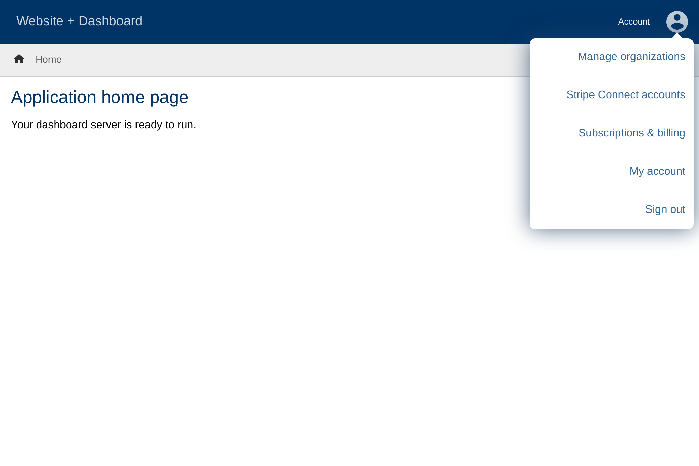
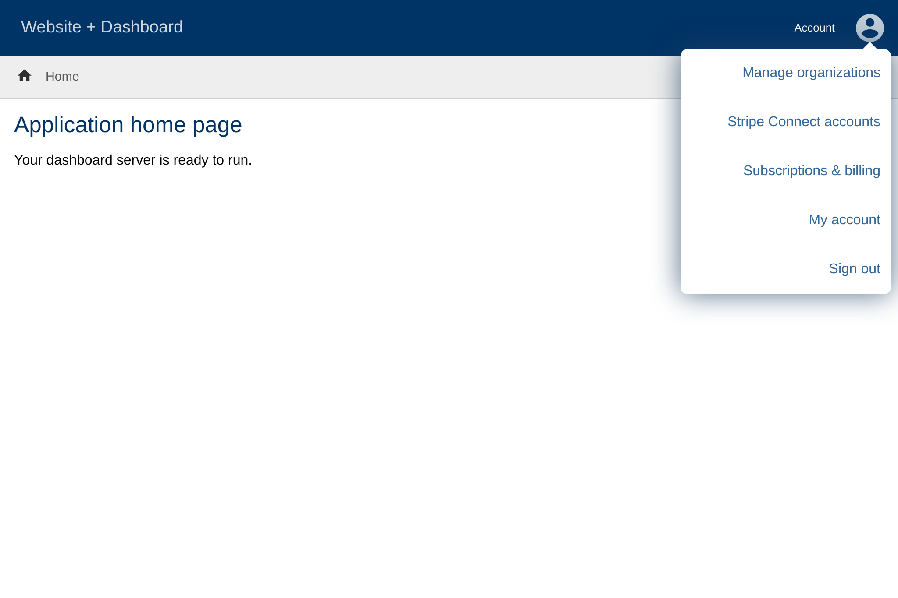

User documentation home
Dashboard is software websites can use to provide user accounts, organizations, subscriptions and other things under a common interface. This documentation covers how to manage your account when a website uses Dashboard.

Dashboard is software websites can use to provide user accounts, organizations, subscriptions and other things under a common interface. This documentation covers how to manage your account when a website uses Dashboard.
